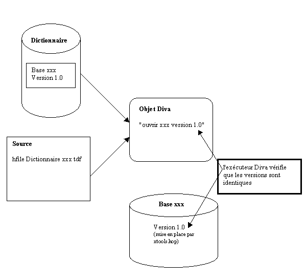

Utilité des versions de fichiers
La notion de version de fichier a été créée pour empêcher un programme de s'exécuter alors qu'il n'a pas été compilé avec la bonne version d'un dictionnaire de données.
Si une modification est faite dans la structure d'un fichier, le fichier doit être mouliné avant d'être utilisé par les nouveaux programmes. Si les nouveaux programmes sont exécutés sur l'ancien fichier, il en résulte un désordre dans le fichier, certains enregistrements étant à l'ancien format et d'autres au nouveau.
Une fois mise en place la vérification des versions de fichiers, le système contrôle automatiquement qu'un module qui utilise un fichier a bien été compilé avec la bonne définition de ce de fichier.
Mise en place des numéros de version
Le dictionnaire permet de saisir un numéro de version au niveau de chaque base (base = fichier). Ce numéro est stocké par le compilateur Diva dans les objets qui utilisent ce fichier.
L'utilitaire Xtools.dhop (Menu Fichier, choix Modifier les caractéristiques) et la fonction diva HStat permettent de placer un numéro de version au niveau du fichier physique. Dans le fichier physique, deux informations sont stockées :
le numéro de version de la base
un drapeau "Toujours contrôler la version" qui permet de forcer le contrôle.

Traitement lors de l'ouverture
Lors de l'ouverture d'un fichier déclaré par HFile, le système contrôle que les deux numéros de version (version du fichier et version fournie par le dictionnaire lors de la compilation) sont identiques. Si ce n'est pas le cas, le programme est interrompu.
Le contrôle se fait de la manière suivante :
si le module qui ouvre le fichier contient un numéro de version (en provenance du dictionnaire), le système contrôle que ce numéro est le même que celui stocké dans le fichier.
si le module qui ouvre le fichier ne contient pas de numéro de version mais que le drapeau "Toujours contrôler la version" est positionné, le système sort en erreur.
L'option NoVersionCheck permet de ne pas faire le contrôle de version. Cette option est utilisée pour les "moulinettes" qui doivent ouvrir le fichier à l'ancienne version.
En résumé :
Avec un fichier ayant la case cochée et la version précisée, un programme sans version ne pourra pas accéder au fichier ; il pourra par contre y accéder si la case n’est pas cochée, que le fichier ait ou non un numéro de version.
Pour mettre en oeuvre le contrôle de cohérence, il faut compiler les nouveaux programmes avec un numéro de version dans le dictionnaire et livrer les nouveaux fichiers avec ce numéro de version et la case « Toujours contrôler la version » cochée.
Cas particulier des programmes Zoom et Hql
Les programmes génériques tels que Zoom et Hql ne connaissent pas au moment de leur compilation le fichier qu’ils vont traiter. Celui-ci est passé en paramètre au moment de l’exécution.
Pour que le contrôle de la version se fasse, le module associé que vous développez (module du zoom, module hql) doit comporter la déclarative HFileVersion qui permet au programme de connaître la version de la base fournie par le dictionnaire.